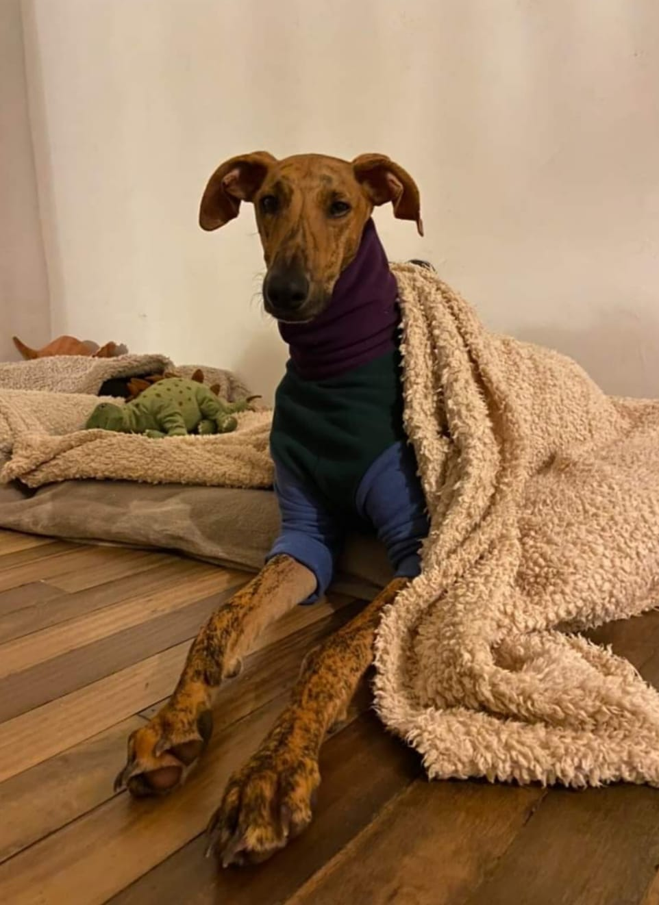
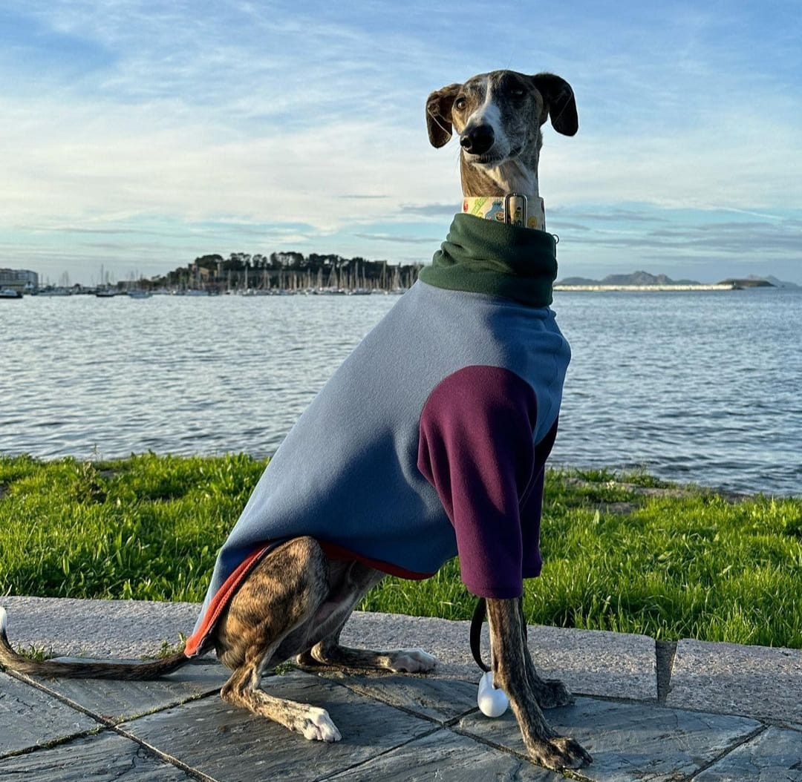
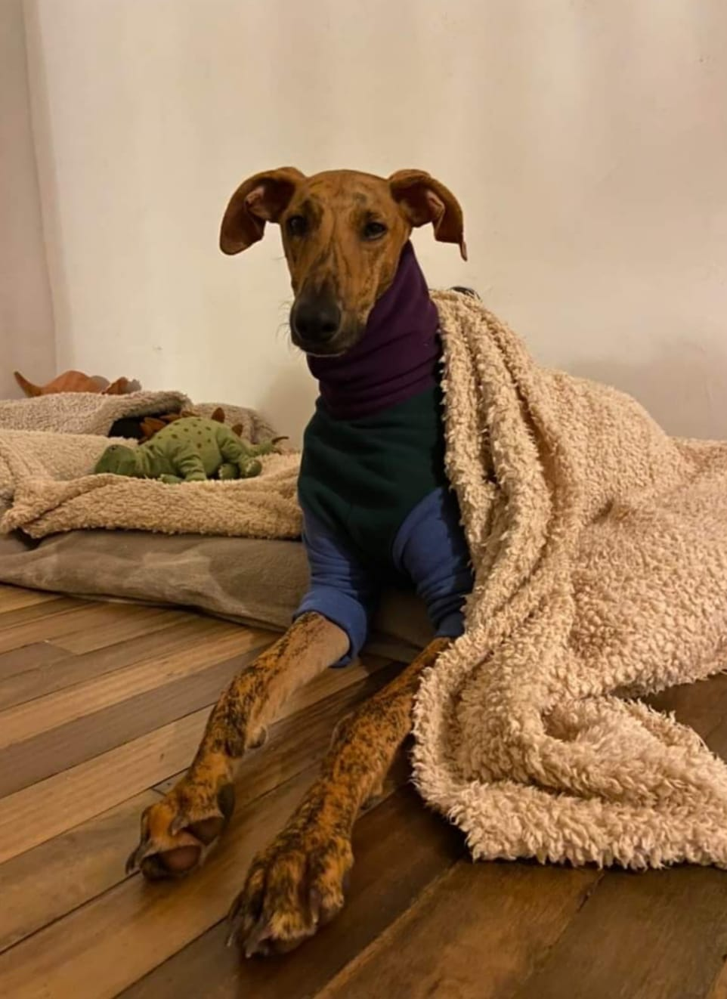
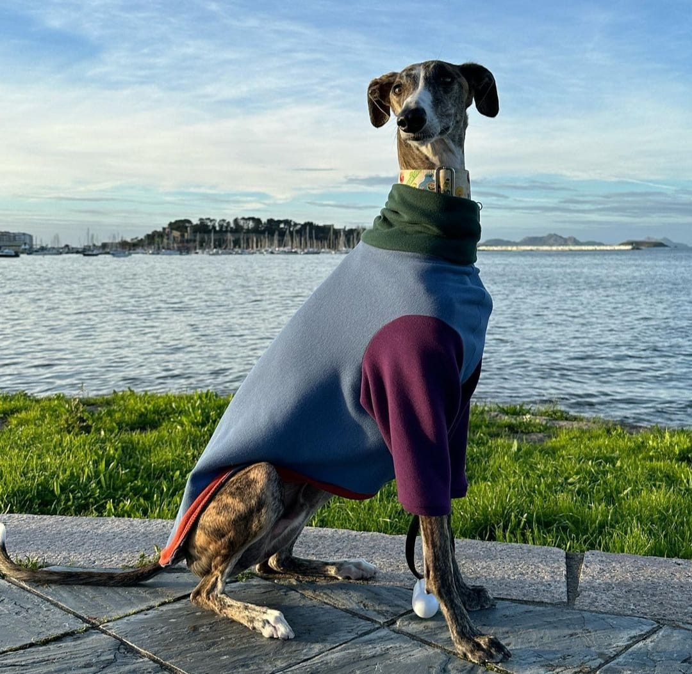

Jersey sin mangas
30€
Diseñado especialmente para galgos y otros lebreles de pecho profundo. Este jersey sin mangas ofrece la calidez que tu galgo necesita sin restringir el movimiento de sus patas delanteras.
Características
- Ajuste perfecto: Diseño oversized que se adapta al cuerpo esbelto del galgo
- Súper elástico: Tejido de algodón con elastano que se estira sin perder forma
- Cuello apilado: Protege el cuello largo y elegante de tu galgo
- Un solo agujero frontal: Fácil de poner y quitar
Materiales
95% Algodón orgánico, 5% Elastano. Tejido de punto suave y transpirable.
Cuidados
Lavar en frío. Secar al aire. No usar secadora.
Selecciona tu talla
Razas compatibles
Galgo español, Galgo inglés (Greyhound), Whippet grande, Lurcher, Podenco, Galgo italiano grande
Guía de tallas
Cómo medir a tu galgo
Pecho
Mide alrededor del pecho de tu galgo, justo debajo de las patas delanteras. Hazlo ajustado ya que es una prenda elástica que se estirará para adaptarse.
Largo
Mide desde la base del cuello (con la cabeza levantada) hasta el inicio de la cola. Imagina una línea invisible en su trasero y mide hasta ese punto.
| Talla | Pecho (cm) | Largo (cm) | Peso aprox. |
|---|---|---|---|
| S | 58 - 66 | 55 - 62 | 20 - 26 kg |
| M | 66 - 74 | 62 - 70 | 26 - 32 kg |
| L | 74 - 82 | 70 - 78 | 32 - 38 kg |
Consejos de ajuste
- Elige la talla basándote en la medida del pecho de tu galgo.
- Si tu galgo está entre dos tallas, elige la talla superior.
- Los jerseys están diseñados con un ajuste más holgado para permitir el movimiento.
- Las prendas sin mangas son ideales para galgos que no les gustan las mangas o para usar debajo de otras capas.
Factor de calidez
Una capa ligera y transpirable para días frescos o protección solar. Perfecta para galgos que no les gustan las mangas o para usar debajo de otras prendas.